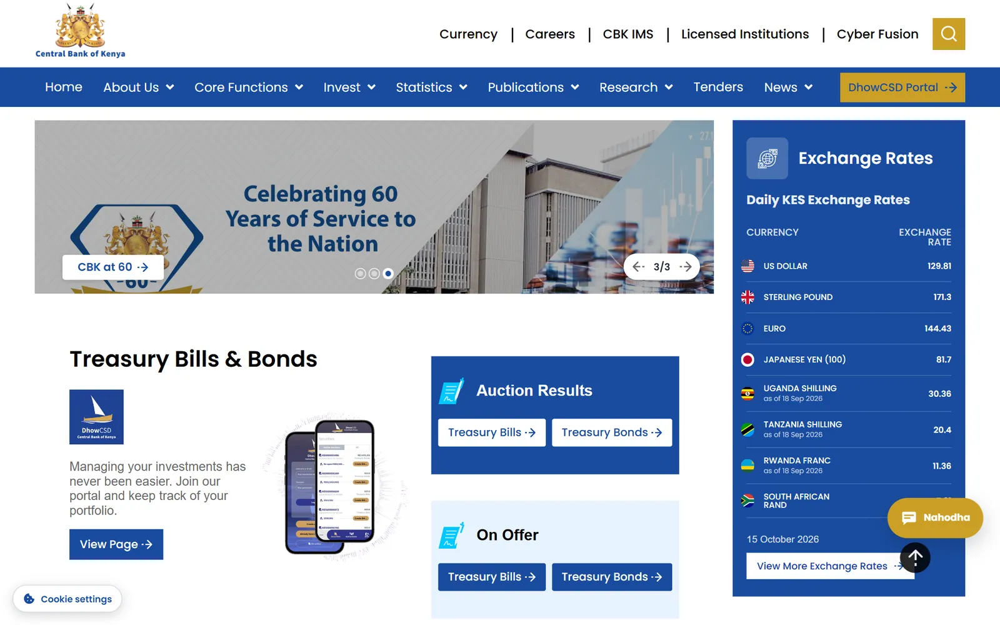
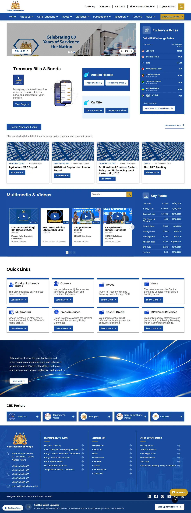

Statistics & rates
Dynamic statistics tables, daily exchange and key rates with charts and archives.
Central Bank of Kenya · 2026
A WordPress platform for Kenya’s central bank. Statistics, rates, tenders and publications flow through an approval workflow, alongside treasury calculators and a public data API.

I led the rebuild of the Central Bank of Kenya’s public website, delivered through Digital Tailor Agency. Departments publish statistics, exchange and key rates, tenders, jobs, publications and news themselves, with every entry approved before it goes live.
Around the site we built treasury bond and bill calculators matched to the Bank’s own pricing models, a public API for policy rates and news, and automated data feeds into the published statistics.
Pre-launch. Screens are from the acceptance-testing environment, October 2026.
Dynamic statistics tables, daily exchange and key rates with charts and archives.
Every department drafts; designated approvers publish, with reasons on rejection.
Bond and bill calculators matched line by line to the Bank’s pricing models.
Policy rates and news for partner systems, documented with OpenAPI.
Market data arrives automatically and lands in the published statistics.
Cookie consent built for Kenya’s Data Protection Act; accessible tables and focus states.
Calculator results must match the Bank’s own models exactly.
Reconciled every calculator against the Bank’s workbooks, with automated test suites.
Dozens of departments publish independently.
Role-based authoring with approvals and notifications routed to the right people.
Go-live for a national institution needs evidence.
Code review, automated test suites, a departmental UAT plan and operations manuals.
